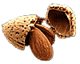
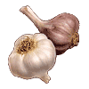

Правильно подобранная диета снижает риск сердечно-сосудистой заболеваемости на 75%, являясь натуральной, более безопасной и вкусной альтернативой лекарственным средствам.
«If I was a co-operative stores and family hotel combined, I might be able to oblige you.
Being only a chemist hampers me»
Jerome K. Jerome «Three men in a boat»
«Будь я сочетанием продуктовой лавки с семейным пансионом,
я мог бы вам помочь. Но я только аптекарь»
Джером К. Джером «Трое в лодке, не считая собаки»
Проблема профилактики сердечно-сосудистой заболеваемости и смертности является очень актуальной. У большой части учёных и клиницистов надежды на её решения связаны с достижениями современной фармакологии в сфере разработки и внедрения в практику новых антигипертензивных, антитромботических и гиполипидемических средств. Поскольку формирование сердечно-сосудистой патологии - многофакторный процесс, логично полагать, что полифармакотерапия должна иметь больше шансов на успех.
В 2003 г. был предложен специальный набор («Polypill») из нескольких лекарственных средств (статин, 2-3 антигипертензивных средства, фолиевая кислота и аспирин), который снижает риск развития сердечно-сосудистых заболеваний более чем на 80%. Несмотря на достаточно высокую эффективность фармакологического комплекса, его широкое применение на практике ограничивалось высокой стоимостью, возможными нежелательными действиями препаратов, а также психологическим неприятием со стороны пациентов необходимости длительного одновременного применения нескольких лекарственных средств.
Вместе с тем накоплены данные, свидетельствующие о том, что фармакологический подход к коррекции сердечно-сосудистых нарушений не является единственным. Так, в ряде исследований показан профилактический эффект некоторых продуктов питания. Несмотря на то, что список этих продуктов достаточно велик, не для каждого из них имеются достоверные доказательства эффективности.
Выбор продуктов питания, обладающих наибольшим профилактическим действием в отношении развития сердечно-сосудистых заболеваний, был проведён группой учёных из Европы, решивших составить специальную диету, эффективность которой была бы сопоставима с эффективностью лекарственных средств. Основываясь на результатах контролируемых клинических испытаний и мета-анализов, они включали в диету только те продукты, положительный эффект которых (при индивидуальном применении) соответствовал первому и второму уровню доказательности. В результате в составленный ими продуктовый набор («Polymeal») вошли следующие ингредиенты: вино, рыба, чёрный шоколад, фрукты, овощи, миндаль и чеснок.

Ранее было установлено, что ежедневное употребление 150 мл красного вина снижает заболеваемость сердечно-сосудистой патологией более чем на 30%, 100 г шоколада - более чем на 20%, а 114 г рыбы 4 раза в неделю - почти на 15%. Возможно, эффект шоколада связан с влиянием его на уровень артериального давления. Так, плитка шоколада способствуют снижению систолического артериального давления на 5,1 мм рт.ст., а диастолического - на 1,8 мм рт.ст. Употребление 600-900 мг чесночного порошка (соответствует 1,8-2,7 г свежего чеснока) в день на 0,44 ммоль/л снижают в крови уровень общего холестерина и на 38% риск сердечно-сосудистых заболеваний. Фрукты, овощи также могут понижать АД, а миндаль приводит к снижению уровня холестерина, поэтому они также были включены в диету, хотя их влияние на сердечно-сосудистую заболеваемость и смертность не было изучено в достаточной степени.
Объединив пищевые продукты в один профилактический набор, авторы исходили из предположения, что их совместное применение будет более эффективно, чем использование по отдельности. С целью его подтверждения были проанализированы особенности питания за 46 лет когорты, состоявшей из 5209 пациентов, проживающих в городе Фрамингем (США) и в течение многих лет обследующихся на предмет выявления факторов риска сердечно-сосудистых заболеваний в рамках так называемого Фрамингемского исследования. «Конечными точками» в исследовании служили частота возникновения сердечно-сосудистой патологии и случаи летальных исходов от сердечно-сосудистых заболеваний, а также частота смерти от других причин.

Результаты исследования превзошли все ожидания: диета увеличивала продолжительность жизни у мужчин на 6,6 лет, а у женщин - на 4,8 года. Её применение сопровождалось снижением сердечно-сосудистой заболеваемости на 76%! Проективное действие диеты было наиболее стабильным у людей в возрасте старше 50 лет.
Авторам не удалось установить, усиливался ли профилактический эффект при увеличении потребления указанных ингредиентов сверх рекомендуемого количества. Вместе с тем, его уменьшение или полное исключение какого-либо компонента из диеты (при сохранении всех других составляющих) вело к снижению эффективности диеты. Особенно заметные последствия вызывало отсутствие в диете вина, снижавшее её профилактическую ценность на 11%. Упущение прочих ингредиентов сопровождалось меньшими последствиями: без чеснока эффект от диеты был ниже на 8%, без шоколада - на 6%, без миндаля - на 3%, а без рыбы всего на 1%.
Демонстрируя педантичный подход к оценке предложенного метода профилактики кардиологических заболеваний, составители диеты помимо её эффективности учли и возможные нежелательные последствия применения указанного продовольственного набора. Наиболее трудно переносимым продуктом оказался чеснок: потреблявшие его индивидуумы жаловались на характерный запах, исходящий из полости рта и от тела. Остальные продукты вызывали побочные эффекты лишь при передозировке. Так, например, в крови у людей, употреблявших в пищу рыбу в количествах, превышающих рекомендованные, обнаруживалось повышенное содержание ртути. Следует отметить, что речь идет об использовании в пищу мяса акулы и меч-рыбы. Среди побочных эффектов, связь которых с применением диеты не была доказана, можно указать на повышенное газообразование и боль в животе. Имели место также аллергические реакции.
Компоненты диеты, как правило, легко совместимы с обычно принимаемой пищей. Вместе с тем, не рекомендуется сочетать диету с алкогольными напитками, не входящими в перечень диетических ингредиентов. Как справедливо отмечают авторы, избыток алкоголя может привести к ненужным конфликтам с друзьями, родственниками и на работе, отрицательные последствия которых способны снизить позитивное влияние диеты.
Учитывая указанные нежелательные эффекты, наблюдавшиеся у лиц, придерживавшихся диеты, её авторы сочли необходимым дать некоторые рекомендации, касающихся правил её применения. Так, использование одного из самых активных компонентов диеты - вина диктует необходимость отказаться от вождения автомобиля в ближайшее после употребления диетического набора время. Чеснок не рекомендуется променять перед романтическим рандеву, однако, этим правилом можно приберечь в том случае, если партнёр, с которым вы встречаетесь, также приверженец данной диеты.
Таким образом, диету, содержащую перечисленные ингредиенты, следует считать эффективной и безопасной. По мнению авторов диеты, предложенный способ профилактики сердечно-сосудистых заболеваний обойдется потребителю не дешевле, чем фармакологические препараты, может быть, он будет даже несколько менее эффективен, чем лекарства, но зато он значительно вкуснее и, несомненно, будет пользоваться большим спросом. Стоимость продуктового набора, безусловно, зависит от того региона, в котором он приобретается. Как бы то ни было, авторы диеты не советуют особенно экономить при покупке соответствующих продуктов, замечая, что удовольствие, получаемое при употреблении хорошего вина и любимого сорта шоколада, непременно усилит профилактическое действие.
«Мы полагаем, что нам удалось выявить все основные продукты, способные достоверно снижать риск кардиологических заболеваний. В то же время некоторые другие компоненты питания, положительное влияние которых не столь очевидно, также могут быть полезны» - предупреждают составители диеты. Из последних можно назвать оливковое и соевое масло, соевые бобы, томаты, овёс, отруби, кукурузу, горох, орехи и чай. Эти продукты следует рассматривать в качестве дополнения к основным компонентам диеты, способного повысить её эффективность.
Необходимо отметить, что нет никаких оснований ограничивать меры профилактики сердечно-сосудистых заболеваний только диетой. Так, ежедневные получасовые прогулки также очень полезны в этом отношении. Для людей, которым по каким-либо причинам необходимо уделять максимум внимания профилактике сердечно-сосудистых заболеваний, видится целесообразным сочетание диеты и лекарственных препаратов.
Авторы надеются, что включение компонентов составленной ими диеты в разнообразные кулинарные рецепты позволит сделать профилактику сердечно-сосудистых заболеваний привлекательной для широких слоёв населения. Если же в профилактическое действие диеты поверят кардиологи и терапевты, то наступит время, когда с рецептом, полученным в поликлинике, уместно будет направиться не в аптеку, а в продовольственный магазин или ресторан.
O.H. Franco, L. Bonneux, , C. Laet, A. Peeters, E.W. Steyerberg, J.P. Mackenbach.
The Polymeal: a more natural, safer, and probably tastier (than the Polypill) strategy to reduce cardiovascular disease by more than 75%
BMJ 2004; 329: 1447-50